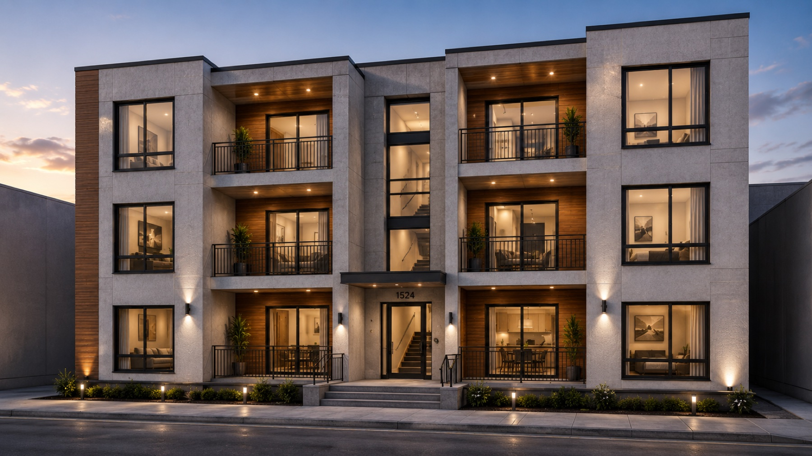

Developers · Mixed-Use
Residential over commercial — the right hybrid.
Mixed-use development tests every limit of conventional construction. The ground-plane wants bespoke retail bays, large clear spans, and active street frontages. The upper levels want repeatable residential units, fast delivery, and a stable cost curve.
The natural answer — well-rehearsed in Singapore, Hong Kong, and increasingly in UK regeneration schemes — is a hybrid: in-situ commercial podium, PPVC residential above.

Why the lower floors stay in-situ.
Commercial podiums need clear spans, double-height retail, irregular column grids, and pre-let-driven bespoke detailing. Volumetric modules — which are at their most efficient on small, repeatable cells — are the wrong tool for the job. In-situ concrete, with conventional formwork or post-tensioned slabs, remains the right tool below ground and through the public ground levels.
What changes is what sits above. The podium becomes a calibrated transfer structure — a flat, level, dimensionally accurate plinth — engineered to take volumetric residential modules instead of an in-situ residential frame.

The schedule finally overlaps.
On a conventional mixed-use scheme, residential construction starts only when the podium is complete and weather-tight. On a hybrid scheme, the modules can be manufactured while the podium is still being poured. The two critical paths run in parallel rather than in series.
The result is one of the most consistent findings in PPVC residential delivery: programme to weather-tight residential structure is typically 40–60% shorter than the in-situ equivalent. The podium developer recovers months of finance interest, and the retail tenants open earlier into a scheme that already has residents above.
What the podium has to deliver.
01 · Level
Flatness within ±10 mm.
The podium slab is the foundation for every module above it. Out-of-level surfaces cascade tolerances upward — and modules cannot absorb that.
02 · Load
Engineered for module weight + dynamic.
Module dead load plus a transient lift dynamic factor sets the podium's structural envelope. Designed in from the start, not retrofitted.
03 · Services
Pre-positioned risers.
Vertical service risers (water, drainage, electrical, ventilation) terminate at module locations defined in the engineering data set, not improvised on site.
04 · Connections
Embedded anchor plates.
Steel anchor plates cast into the podium top surface receive the structural connection from each module. Tolerance band engineered to absorb site variance.
05 · Waterproofing
Above and below the seam.
The podium roof is designed as a continuous waterproof surface — module-to-podium joins are detailed with primary and secondary weather lines.
The hybrid is the answer.
Mixed-use developers have rehearsed this combination across multiple markets, and the conclusion is consistent: in-situ for the ground plane, volumetric for the repeatable residential above. We are not inventing the model. We are bringing it, with the right engineering, to African development pipelines that are actively asking for it.
The detailed engineering coordination — podium tolerances, anchor positions, lift sequence — happens at design freeze. Get those four pieces right, and the schedule overlap delivers itself.